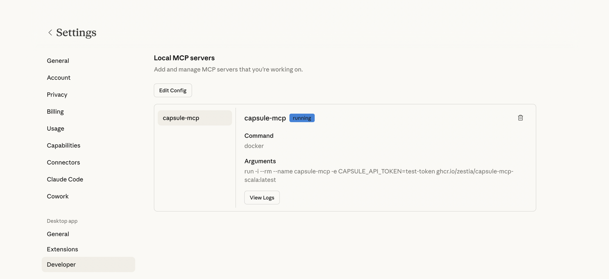

Capsule MCP Server
MCP server that connects to your Capsule CRM data.
Setup
You can get started with the server and use it with your favourite AI assistant.
Prerequisites
You will need an AI assistant that supports local MCP servers. Some popular options:
- Claude Desktop - Anthropic’s desktop app
- Cursor - AI code editor
Minimum System Requirements
Capsule MCP runs locally on your machine inside Docker. Running this in combination with your chosen AI assistant (Claude, Cursor etc.), means machines with less than 16 GB RAM may struggle.
Windows
- OS: Windows 11 (64-bit)
- CPU: Modern 4-core+ Intel/AMD
- RAM: 16 GB
- Disk: SSD with 10 GB free
Mac
- OS: macOS 12+
- CPU: Apple Silicon (M1/M2/M3) or Intel Core i5+
- RAM: 16 GB
- Disk: SSD with 10 GB free
Install Docker
The Capsule MCP Server runs inside Docker. Follow the instructions below for your operating system.
Already have Docker installed? Skip ahead to Configuration.
Option 1: Docker Desktop (recommended for most users)
- Go to https://www.docker.com/products/docker-desktop
- Click Download Docker Desktop, selecting your OS
- Run the installer and follow the prompts
- Restart your computer when prompted
- Launch Docker Desktop
Option 2: CLI only (for developers)
Follow the official installation guide for your specific distribution.
Verify your installation
Once Docker is installed (via any method above) and running, confirm it is working by opening a terminal/console and running:
docker --version
The above should print a version number.
Configuration
Configure your favourite AI assistant to connect to the Capsule MCP Server.
1. Generate an API key
Generate an API key in your Capsule CRM account.
In your Capsule account, navigate to: My Preferences → API Authentication Tokens → Generate New API Token
- Description: Capsule MCP Server
- Scope of this token: Select
Read information from your Capsule accountonly
Copy the generated token and temporarily save it somewhere safe.
2. Locate your AI assistant config file
Locate the config file for your chosen AI assistant:
- Claude Desktop
- MacOS:
~/Library/Application Support/Claude/claude_desktop_config.json - Windows:
%APPDATA%/Claude/claude_desktop_config.json
- MacOS:
- Cursor - configuration locations
Add the following to the config file, replacing YOUR-API-TOKEN with your Capsule API token and save.
{
"mcpServers": {
"capsule-mcp": {
"command": "docker",
"args": [
"run",
"-i",
"--rm",
"--name",
"capsule-mcp",
"-e",
"CAPSULE_API_TOKEN=YOUR-API-TOKEN",
"ghcr.io/zestia/capsule-mcp-scala:latest"
]
}
}
}
3. Test the connection
Restart your AI assistant. Depending on your AI assistant, you should now see a new capsule-mcp server running in the list of available MCP servers in settings.
For example, in Claude Desktop:

Try asking a basic question about your Capsule account to test the connection, for example: How many contacts do I have in Capsule?